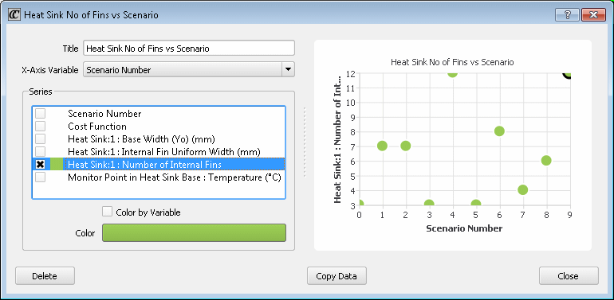
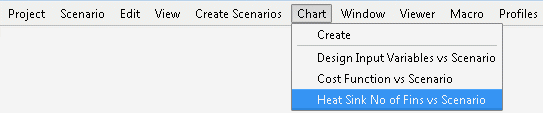

A row of Scenario
Table data can be more easily compared by creating a chart.
Procedure
- Choose .
- Select
an X-Axis Variable from the dropdown
list.
You can choose Scenario Number, Cost Function
(if one is defined), or any input or output variable.
- Select one or more of the Series options. These
are plotted on the y-axis.
You can change the color
of the chart points or you can color by variable value.
- It is recommended
that you give the chart a meaningful title. By default, the title
is assigned the name Chart n where n is
the chart sequence number.
- Click Close to
save the chart.
Results
Figure 1 is an example of a Results
Comparison Chart showing the numbers of heat sink fins for each
scenario.
Figure 2 shows how the chart is
selected to be opened from the Command Center menu.
Figure 1. Results Comparison Chart Example
Figure 2. Results Comparison Charts Listing
Tip Click Copy Data to copy the chart data
for pasting into a spreadsheet.